№42 · Позвоночник · Успех
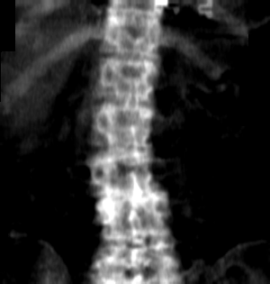
Эталон: Позвоночник; модель: Позвоночник.
Итоговые метрики · Номера для ручной проверки
Текущие веса improvements_v2, прежние 100 контрольных оригиналов. По возможности показаны пять успехов и пять ошибок на модуль, с разными пиксельными массивами. Если успехов меньше, показывается фактическое число и лучшие, но ещё несовершенные результаты. Это отбор иллюстраций, не дополнительная оценка качества.
Номера совпадают с галереей всех исходных снимков: строки labels.csv, начиная с 1. Номер в приложении без фильтра отдельно указан, если отличается. Для геометрических модулей задана верная область тела, чтобы ошибка маршрутизатора не подменяла ошибку локализации. Допуски ниже служат отбору примеров, не являются клиническими критериями.
Критерий отбора успеха: Верная область тела.

Эталон: Позвоночник; модель: Позвоночник.

Эталон: Позвоночник; модель: Позвоночник.
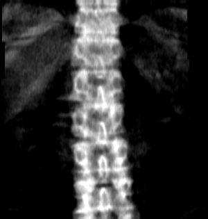
Эталон: Позвоночник; модель: Позвоночник.
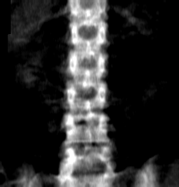
Эталон: Позвоночник; модель: Позвоночник.
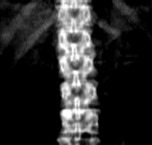
Эталон: Позвоночник; модель: Позвоночник.

Эталон: Левое бедро; модель: Правое бедро.

Эталон: Правое бедро; модель: Левое бедро.
Критерий отбора успеха: Количество совпало; среднее вертикальное отклонение ≤ 5 мм.

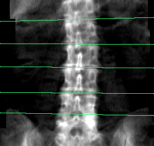
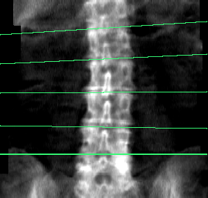
Линий эталон / модель: 5 / 5; среднее вертикальное отклонение сопоставленных линий: 2.0 мм.
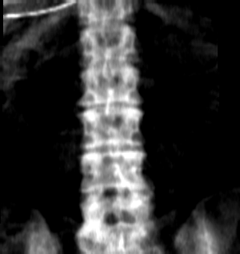
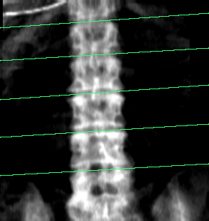
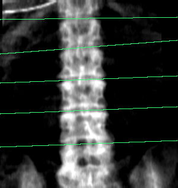
Линий эталон / модель: 5 / 5; среднее вертикальное отклонение сопоставленных линий: 2.2 мм.

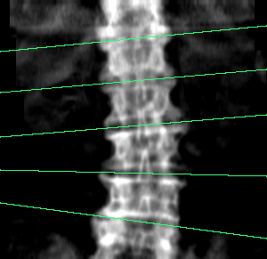
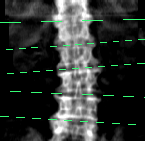
Линий эталон / модель: 5 / 5; среднее вертикальное отклонение сопоставленных линий: 2.4 мм.

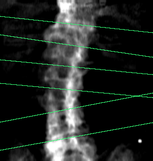
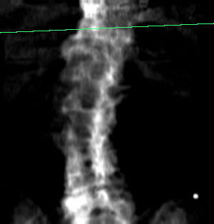
Линий эталон / модель: 6 / 1; среднее вертикальное отклонение сопоставленных линий: 11.0 мм.

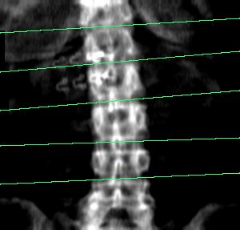
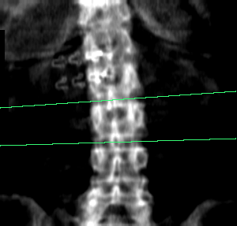
Линий эталон / модель: 5 / 2; среднее вертикальное отклонение сопоставленных линий: 2.3 мм.
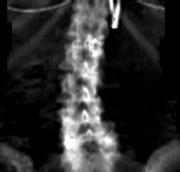
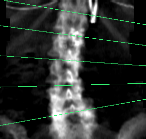
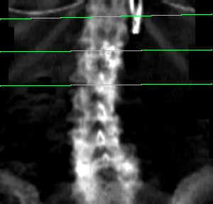
Линий эталон / модель: 5 / 3; среднее вертикальное отклонение сопоставленных линий: 8.6 мм.

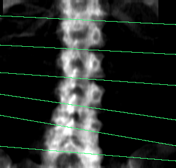
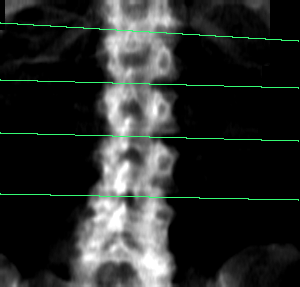
Линий эталон / модель: 6 / 4; среднее вертикальное отклонение сопоставленных линий: 5.6 мм.

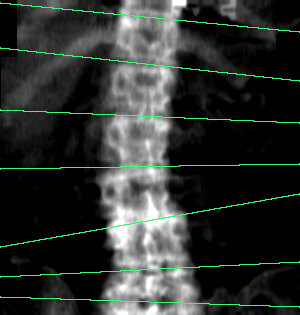
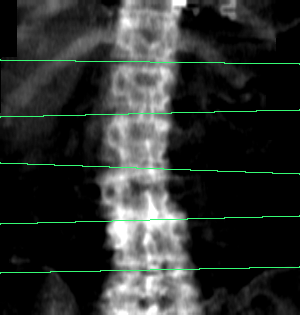
Линий эталон / модель: 7 / 5; среднее вертикальное отклонение сопоставленных линий: 4.8 мм.
Критерий отбора успеха: Нет пропусков/лишних точек; максимальная ошибка ≤ 5 мм.

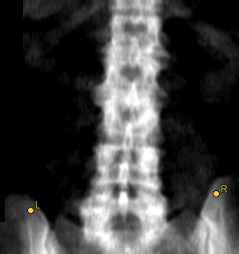
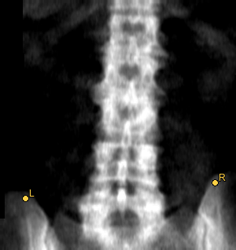
Средняя ошибка: 11.7 мм; максимум: 12.3 мм. Пропущено видимых: 0; лишних: 0.

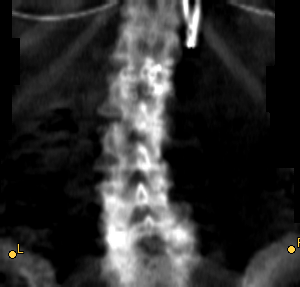
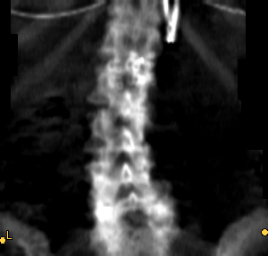
Средняя ошибка: 14.2 мм; максимум: 16.5 мм. Пропущено видимых: 0; лишних: 0.

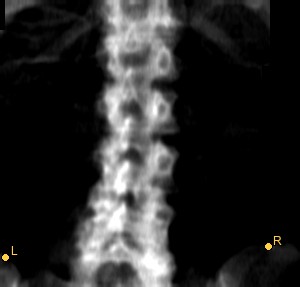
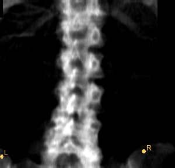
Средняя ошибка: 14.5 мм; максимум: 18.4 мм. Пропущено видимых: 0; лишних: 0.
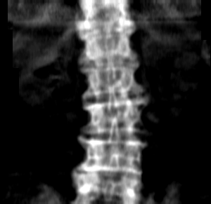
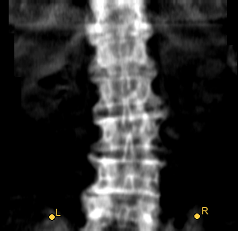
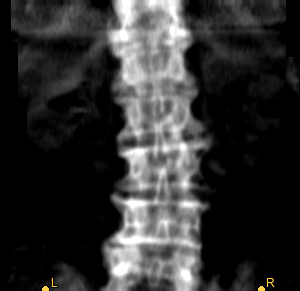
Средняя ошибка: 19.9 мм; максимум: 20.4 мм. Пропущено видимых: 0; лишних: 0.
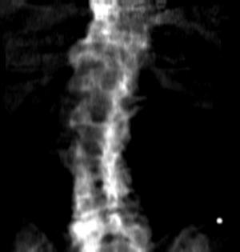
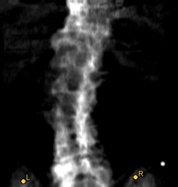
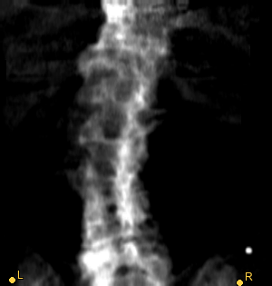
Средняя ошибка: 20.6 мм; максимум: 25.3 мм. Пропущено видимых: 0; лишних: 0.
Таких случаев в контрольной части нет.


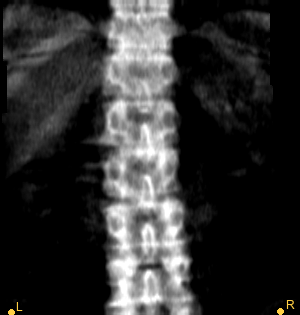
Нет пар точек для измерения расстояния. Пропущено видимых: 0; лишних: 2.

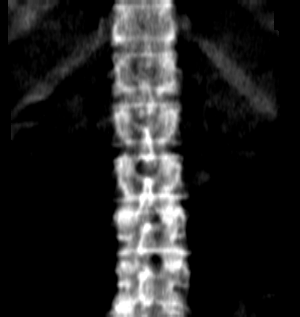
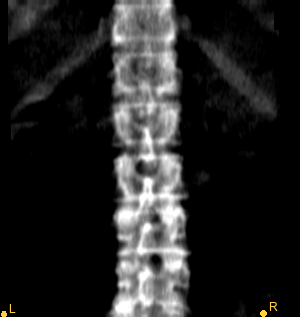
Нет пар точек для измерения расстояния. Пропущено видимых: 0; лишних: 2.


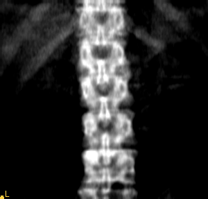
Нет пар точек для измерения расстояния. Пропущено видимых: 0; лишних: 1.

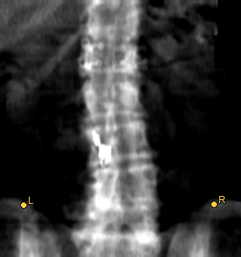
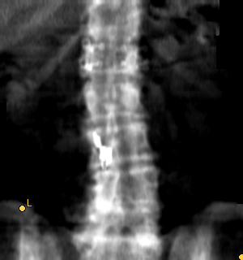
Средняя ошибка: 34.5 мм; максимум: 67.4 мм. Пропущено видимых: 0; лишних: 0.
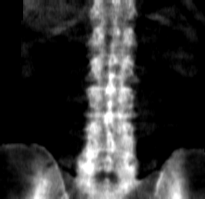
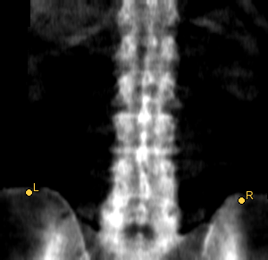
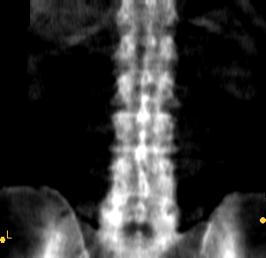
Средняя ошибка: 45.1 мм; максимум: 60.6 мм. Пропущено видимых: 0; лишних: 0.
Критерий отбора успеха: Все рамки сопоставлены при IoU ≥ 0,5; нет пропусков и лишних.
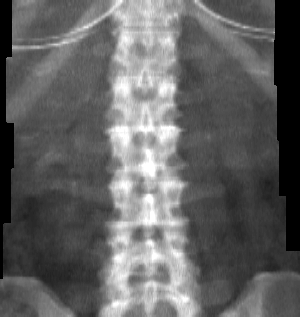
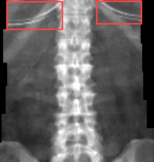
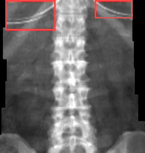
Рамок эталон / модель: 2 / 2; совпало при IoU ≥ 0,5: 2; пропуски: 0; лишние: 0.
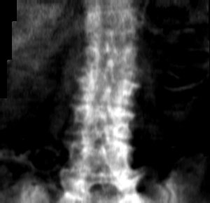


Рамок эталон / модель: 0 / 0; совпало при IoU ≥ 0,5: 0; пропуски: 0; лишние: 0.


Рамок эталон / модель: 0 / 0; совпало при IoU ≥ 0,5: 0; пропуски: 0; лишние: 0.


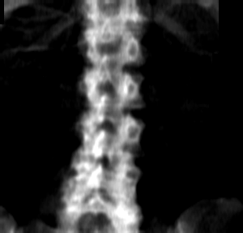
Рамок эталон / модель: 0 / 0; совпало при IoU ≥ 0,5: 0; пропуски: 0; лишние: 0.


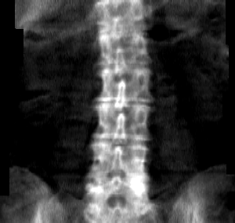
Рамок эталон / модель: 0 / 0; совпало при IoU ≥ 0,5: 0; пропуски: 0; лишние: 0.


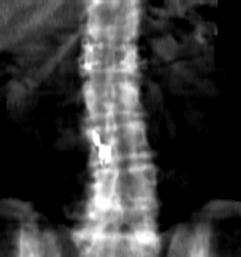
Рамок эталон / модель: 3 / 0; совпало при IoU ≥ 0,5: 0; пропуски: 3; лишние: 0.

Рамок эталон / модель: 5 / 2; совпало при IoU ≥ 0,5: 2; пропуски: 3; лишние: 0.


Рамок эталон / модель: 3 / 1; совпало при IoU ≥ 0,5: 1; пропуски: 2; лишние: 0.


Рамок эталон / модель: 1 / 0; совпало при IoU ≥ 0,5: 0; пропуски: 1; лишние: 0.


Рамок эталон / модель: 1 / 0; совпало при IoU ≥ 0,5: 0; пропуски: 1; лишние: 0.
Критерий отбора успеха: Нет пропусков/лишних точек; максимальная ошибка ≤ 10 мм.

Средняя ошибка: 4.0 мм; максимум: 5.5 мм. Пропущено видимых: 0; лишних: 0.

Средняя ошибка: 4.6 мм; максимум: 6.3 мм. Пропущено видимых: 0; лишних: 0.
Средняя ошибка: 4.1 мм; максимум: 7.0 мм. Пропущено видимых: 0; лишних: 0.

Средняя ошибка: 5.0 мм; максимум: 7.2 мм. Пропущено видимых: 0; лишних: 0.

Средняя ошибка: 6.2 мм; максимум: 8.0 мм. Пропущено видимых: 0; лишних: 0.

Средняя ошибка: 17.6 мм; максимум: 27.0 мм. Пропущено видимых: 1; лишних: 0.
Средняя ошибка: 15.5 мм; максимум: 21.7 мм. Пропущено видимых: 1; лишних: 0.

Средняя ошибка: 12.6 мм; максимум: 19.0 мм. Пропущено видимых: 1; лишних: 0.

Средняя ошибка: 39.3 мм; максимум: 110.6 мм. Пропущено видимых: 0; лишних: 0.
Средняя ошибка: 3.1 мм; максимум: 4.7 мм. Пропущено видимых: 1; лишних: 0.
Критерий отбора успеха: Нет пропусков/лишних точек; максимальная ошибка ≤ 10 мм.
Средняя ошибка: 5.1 мм; максимум: 8.2 мм. Пропущено видимых: 0; лишних: 0.

Средняя ошибка: 5.8 мм; максимум: 8.5 мм. Пропущено видимых: 0; лишних: 0.
Средняя ошибка: 8.0 мм; максимум: 9.8 мм. Пропущено видимых: 0; лишних: 0.


Средняя ошибка: 19.8 мм; максимум: 33.6 мм. Пропущено видимых: 0; лишних: 0.
Средняя ошибка: 21.2 мм; максимум: 33.2 мм. Пропущено видимых: 0; лишних: 0.
Средняя ошибка: 17.6 мм; максимум: 28.6 мм. Пропущено видимых: 0; лишних: 0.
Средняя ошибка: 20.5 мм; максимум: 27.8 мм. Пропущено видимых: 0; лишних: 0.
Средняя ошибка: 19.1 мм; максимум: 27.3 мм. Пропущено видимых: 0; лишних: 0.
Критерий отбора успеха: IoU ≥ 0,85.
IoU ROI = 0.950.
IoU ROI = 0.940.
IoU ROI = 0.928.

IoU ROI = 0.901.
IoU ROI = 0.896.

IoU ROI = 0.551.
IoU ROI = 0.709.
IoU ROI = 0.718.
IoU ROI = 0.719.

IoU ROI = 0.727.
Критерий отбора успеха: Dice ≥ 0,70; среди успехов приоритет непустым эталонным маскам.

Dice = 0.899; площадь эталона / модели: 145 / 151 пикселей.
Dice = 0.892; площадь эталона / модели: 383 / 444 пикселей.
Dice = 0.887; площадь эталона / модели: 315 / 278 пикселей.
Dice = 0.885; площадь эталона / модели: 326 / 311 пикселей.

Dice = 0.880; площадь эталона / модели: 331 / 403 пикселей.

Dice = 0.000; площадь эталона / модели: 62 / 0 пикселей.
Dice = 0.257; площадь эталона / модели: 174 / 28 пикселей.
Dice = 0.438; площадь эталона / модели: 89 / 135 пикселей.

Dice = 0.508; площадь эталона / модели: 195 / 69 пикселей.

Dice = 0.509; площадь эталона / модели: 112 / 104 пикселей.
№52, №55, №58, №102, №121, №122, №287, №288
Это расхождения эталонов, а не список ошибок модели. Флаг 1 означает нарушение. Наличие рамки само по себе ещё не доказывает ошибку таблицы; уточните смысл объекта. Исходная разметка не изменена.
Табличный флаг артефакта: 1; рамок в визуальной разметке: 0.

Табличный флаг артефакта: 1; рамок в визуальной разметке: 0.

Табличный флаг артефакта: 1; рамок в визуальной разметке: 0.
Табличный флаг артефакта: 0; рамок в визуальной разметке: 3.
Табличный флаг артефакта: 0; рамок в визуальной разметке: 3.
Табличный флаг артефакта: 0; рамок в визуальной разметке: 4.
Табличный флаг артефакта: 0; рамок в визуальной разметке: 1.
Табличный флаг артефакта: 0; рамок в визуальной разметке: 1.
Расхождений не осталось.